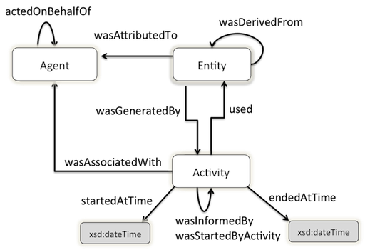

The PROV Ontology (PROV-O) expresses the PROV Data Model using
the OWL2 Web Ontology Language (OWL2). It provides a set of classes,
properties, and restrictions that can be used to represent and
interchange provenance information generated in different systems and
under different contexts. It can also be specialized to create new
classes and properties to model provenance information specific to
different domain applications.
The OWL encoding of the PROV Ontology is available here.
Status of This Document
This
section describes the status of this document at the time of its
publication. Other documents may supersede this document. A list of
current W3C publications and the latest revision of this technical report can be found in the W3C technical reports index at http://www.w3.org/TR/.
PROV Family of Specifications
This document is part of the PROV family of specifications, a set
of specifications defining various aspects that are necessary to achieve
the vision of inter-operable
interchange of provenance information in heterogeneous
environments such as the Web. The specifications are:
PROV-DM, the PROV data model for provenance (this document);
PROV-CONSTRAINTS, a set of constraints applying to the PROV data model;
PROV-N, a notation for provenance aimed at human consumption;
PROV-O, the PROV ontology, an OWL-RL ontology allowing the mapping of PROV to RDF;
PROV-AQ, the mechanisms for accessing and querying provenance;
PROV-PRIMER, a primer for the PROV data model;
PROV-SEM, a formal semantics for the PROV data model;
PROV-XML, an XML schema for the PROV data model.
How to read the PROV Family of Specifications
The primer is the entry point to PROV offering an introduction to the provenance model.
The Linked Data and Semantic Web community should focus on
PROV-O defining PROV classes and properties specified in an OWL-RL
ontology. For further details, PROV-DM and PROV-CONSTRAINTS specify the
constraints applicable to the data model, and its interpretation.
PROV-SEM provides a mathematical semantics.
The XML community should focus on PROV-XML defining an XML
schema for PROV. Further details can also be found in PROV-DM,
PROV-CONSTRAINTS, and PROV-SEM.
Developers seeking to retrieve or publish provenance should focus on PROV-AQ.
Readers seeking to implement other PROV serializations
should focus on PROV-DM and PROV-CONSTRAINTS. PROV-O, PROV-N,
PROV-XML offer examples of mapping to RDF, text, and XML, respectively.
PROV-O Second Working Draft
This specification defines the PROV Ontology as the normative
representation of the PROV Data Model using the Web Ontology Language
(OWL2). Following feedback, the structure of the document has been
reorganized to suit a gradual introduction to the terms available in
PROV-O, permitting the addition of more elaborate terms as users
understand the earlier terms. A cross reference was added and is created
directly from the OWL ontology. Examples throughout this document are
taken directly from the working group's version control system.
Publication as an Editor's Draft does not imply endorsement by the W3C
Membership. This is a draft document and may be updated, replaced or
obsoleted by other documents at any time. It is inappropriate to cite
this document as other than work in progress.
The PROV Ontology (PROV-O) defines the normative OWL2 Web Ontology Language encoding of the PROV Data Model [PROV-DM].
This document describes the set of classes, properties, and
restrictions that constitute the PROV Ontology. This ontology
specification provides the foundation to implement provenance
applications in different domains that can represent, exchange, and
integrate provenance information generated in different systems and
under different contexts. Together with the PROV Access and Query [PROV-PAQ] and PROV Data Model [PROV-DM],
this document forms a framework for provenance information interchange
and management in domain-specific Web-based applications.
PROV-O conforms to the OWL-RL profile and is lightweight so that it
can be adopted in the widest range of applications. The PROV Ontology
classes and properties are defined such that they can not only be used
directly to represent provenance information, but also can be
specialized for modeling application-specific provenance details in a
variety of domains. Thus, the PROV Ontology is expected to be both
directly usable in applications as well as serve as a reference model
for creating domain-specific provenance ontologies and thereby
facilitate interoperable provenance modeling. To demonstrate the use of
PROV-O classes and properties, this document uses an example provenance
scenario similar to the one introduced in the PROV-Primer [PROV-PRIMER]. PROV-O conforms to the OWL-RL profile and is lightweight so that it can be adopted in the widest range of applications.
The PROV Data Model [PROV-DM]
introduces a minimal set of concepts to represent provenance
information in a variety of application domains. This document maps the
PROV Data Model to PROV Ontology using the OWL2 ontology language, which
facilitates a fixed interpretation and use of the PROV Data Model
concepts based on the formal semantics of OWL2 [OWL2-RDF-BASED-SEMANTICS].
We briefly introduce some of the OWL2 modeling terms that will be used to describe the PROV Ontology. An OWL2 instance
is an individual object in a domain of discourse, for example a person
named Alice or a car, and a set of individuals sharing a set of
additional characteristics is called a class. Person and Car are
examples of classes representing the set of individual persons and cars
respectively. The OWL2 object properties are used to link individuals,
classes, or create a property hierarchy. For example, the object
property "hasOwner" can be used to link car with person. The OWL2
datatype properties are used to link individuals or classes to data
values, including XML Schema datatypes [XMLSCHEMA-2].
The key words "must", "must not", "required", "shall", "shall not", "should", "should not", "recommended", "may", and "optional" in this document are to be interpreted as described in [RFC2119].
2. PROV-O at a glance
PROV-O users may only need to use parts of the entire ontology,
depending on their needs and according to how much detail they want to
include in their provenance information. For this, the PROV-O terms
(classes and properties) are grouped into four categories to provide an
incremental introduction to the ontology: Starting Point terms, Expanded
terms, terms for Qualifying relationships, and terms for Collections.
Starting Point classes and properties provide
the basis for the rest of the PROV Ontology and thus it is recommended
that readers become comfortable with how to apply these terms before
continuing to the remaining categories. These terms are used to create
simple provenance descriptions that can be elaborated using terms from
other categories. The classes and properties in this category are listed
below and are discussed in Section 3.1.
Expanded classes and properties provide
additional terms that can be used to relate classes in the Starting
Point category. The terms in this category are applied in the same way
as the terms in the Starting Point category. Many of the terms in this
category are subclasses or subproperties of those in the Starting Point
category. The classes and properties in this category are listed below
and are discussed in Section 3.2.
Qualified classes and properties provide
elaborated information about binary relations asserted using Starting
Point and Expanded properties. The terms in this category are applied
using a pattern that differs from those in the Starting Point and
Expanded categories. While the relations from the previous two
categories are applied as direct, binary assertions, the terms in this
category are used to provide additional attributes of the binary
relations. The pattern used in this category allows users to provide
elaborate details that are not available using only Starting Point and
Expanded terms. The classes and properties in this category are listed
below and are discussed in Section 3.3.
Collection classes and properties are
specializations of the Starting Point and Qualified terms that describe
the provenance of collections as key-value pairs that are inserted and
removed to create new collections. The classes and properties in this
category are listed below and are discussed in Section 3.4.
The Starting Point category is a small collection of classes
and properties that can be used to create simple, initial provenance
descriptions.
Three classes provide a basis for the rest of PROV-O:
prov:Entity: An entity is a thing one wants to provide provenance for. Things can be physical, digital, conceptual, or otherwise.
prov:Activity: An
activity is something that occurs over a period of time and acts upon
or with entities. This action can take multiple forms: consuming,
processing, transforming, modifying, relocating, using, generating, etc.
prov:Agent: An agent
bears some form of responsibility for an activity taking place.
Further, an agent may act on behalf of another agent when involved with
an activity.
These three classes and the properties that relate them are illustrated in the following figure.

Figure 1. The three Starting Point classes and the properties that relate them.
Entities are related to each other using derivation, which is used to
specify that the creation/existence of an entity was influenced in some
way by the consumption of another entity.
An entity can be attributed to an agent to specify that the entity was
generated by some activity that the agent in question was associated
with.
Activities may depend on each other. PROV-O distinguishes between two
kinds of dependencies which are specified using the properties
prov:wasInformedBy and prov:wasStartedByActivity.
The first is used to specify that an activity used an entity that was
generated by another activity, and the second is used to specify that an
activity was started or triggered by another activity.
The following PROV-O describes the resources involved when
creating a chart about crime statistics. The example uses only Starting
Point terms and serves as a basis for elaboration that will be
described in subsequent sections. In the example, Derek performs an
aggregation of some government crime data, grouping by national regions
that are described in a separate dataset by a civil action group.
@prefix xsd: <http://www.w3.org/2001/XMLSchema#> .
@prefix prov: <http://www.w3.org/ns/prov#> .
@prefix foaf: <http://xmlns.com/foaf/0.1/> .
@prefix ex: <http://example.org#> .
ex:bar_chart
a prov:Entity;
prov:wasGeneratedBy ex:illustrationActivity;
prov:wasDerivedFrom ex:aggregatedByRegions;
.
ex:illustrationActivity
a prov:Activity;
prov:used ex:aggregatedByRegions;
prov:wasAssociatedWith ex:derek;
prov:wasInformedBy ex:aggregationActivity;
.
ex:aggregatedByRegions
a prov:Entity;
prov:wasGeneratedBy ex:aggregationActivity;
.
ex:aggregationActivity
a prov:Activity;
prov:wasStartedAt "2011-07-14T01:01:01Z"^^xsd:dateTime;
prov:wasAssociatedWith ex:derek;
prov:used ex:crimeData;
prov:used ex:nationalRegionsList;
prov:wasEndedAt "2011-07-14T02:02:02Z"^^xsd:dateTime;
.
ex:crimeData
a prov:Entity;
prov:wasAttributedTo ex:government;
.
ex:nationalRegionsList
a prov:Entity;
prov:wasAttributedTo ex:civil_action_group;
.
ex:aggregatedByRegions prov:wasAttributedTo ex:derek .
ex:bar_chart prov:wasAttributedTo ex:derek .
ex:derek
a prov:Agent;
a foaf:Person;
foaf:givenName "Derek"^^xsd:string;
foaf:mbox <mailto:dererk@example.org>;
prov:actedOnBehalfOf ex:chartgen
.
ex:chartgen
a prov:Agent;
a prov:Organization;
foaf:name "Chart Generators";
.
ex:government a prov:Organization, foaf:Organization .
ex:civil_action_group a prov:Organization, foaf:Organization .
The example states that the agent ex:derek was associated with two
activities: ex:aggregationActivity and ex:illustrationActivity. The
activity ex:aggregationActivity used
the entities ex:crimeData (a crime statistics dataset) and ex:nationalRegionsList (a list of national regions), and
generated a new entity, ex:aggregatedByRegions, that aggregates the statistics in
ex:crimeData according to the regions in ex:nationalRegionsList.
The ex:aggregatedByRegions entity was then used by the ex:illustrationActivity activity,
to generate a new entity ex:chart1 that depicts the aggregated statistics.
The example also states that the activity ex:illustrationActivity was
informed by the activity ex:aggregationActivity. Indeed, the former used
the entity ex:aggregatedByRegions, which was generated by the latter.
Because the agent ex:derek was associated with the activities
ex:aggregationActivity and ex:illustrationActivity, the entities
generated by these activities, i.e., ex:aggregatedByRegions and ex:chart1, were
attributed to him.
Finally, the example states that the agent ex:derek acted on behalf of the organization ex:chartgen.
Additionally, some of these terms provide the means to assert extended details about the concepts introduced in section 3.1
(prov:wasStartedBy and (prov:wasEndedBy in activities
and prov:Location in entities).
Further annotations on provenance records can be done through prov:Notes, although we can group the provenance statements in
prov:Accounts in order to keep the record of the provenance metadata itself.
The new terms in this section also facilitate the modeling of common provenance assertions related to web resources.
For example, different versions of a web page can be represented using the prov:wasRevisionOf
property, the prov:hadOriginalSource property can be used to reference the original source
of information used in a web resource and users can quote existent entities using the prov:wasQuotedFrom property.
For expressing the dependency between two different entities, users can assert the prov:tracedTo property.
We illustrate below the use of the expanded terms using
the crime file example from the previous section as reference. Agent
Derek now publishes a post about
his work with the aggregated file, while Monica publishes an
alternate version to reach a more casual audience.
@prefix xsd: <http://www.w3.org/2001/XMLSchema#> .
@prefix foaf: <http://xmlns.com/foaf/0.1/> .
@prefix sioc: <http://rdfs.org/sioc/ns#> .
@prefix prov: <http://www.w3.org/ns/prov#> .
@prefix ex: <http://example.org#> .
ex:accountPost {
ex:accountPost a prov:Account .
ex:derek
a prov:Agent, foaf:Person;
foaf:givenName "Derek"^^xsd:string;
foaf:mbox <mailto:dererk@example.org>;
prov:actedOnBehalfOf ex:chartgen;
.
ex:monica
a prov:Agent, foaf:Person;
foaf:givenName "Monica"^^xsd:string;
foaf:mbox <mailto:monica@example.org>
.
ex:chartgen
a prov:Agent, prov:Organization;
foaf:name "Chart Generators, Inc.";
.
ex:aggregatedByRegions
a prov:Entity;
prov:atLocation <file://Users/aggr.txt>;
.
ex:post9821
a prov:Entity, sioc:Post;
prov:wasGeneratedBy ex:publicationActivity1123;
prov:atLocation ex:more-crime-happens-in-cities; ## PERMALINK of the post
ex:snapshotContent ex:postContent0; ## Snapshot with the content of this version
prov:qualifiedGeneration [
a prov:Generation;
prov:activity ex:publicationActivity1123;
prov:atTime "2011-07-16T01:52:02Z"^^xsd:dateTime;
prov:atLocation <http://dbpedia.org/resource/Madrid>;
];
sioc:title "More crime happens in cities"^^xsd:string;
prov:hadOriginalSource ex:aggregatedByRegions;
prov:wasAttributedTo ex:derek
.
## Version 2 of the post
ex:post9821v1
a prov:Entity, sioc:Post;
prov:atLocation ex:more-crime-happens-in-cities; ## PERMALINK of the post
ex:snapshotContent ex:postContent1; ## Snapshot with the content of this version
prov:wasRevisionOf ex:post9821;
prov:specializationOf ex:post9821;
prov:wasAttributedTo ex:derek;
.
## Rephrasing of the post in a new version
ex:post9821v2
a prov:Entity, sioc:Post;
prov:atLocation ex:more-crime-happens-in-cities-for-dummies; ## PERMALINK of the post
ex:snapshotContent ex:postContent2; ## Snapshot with the content of this version
prov:alternateOf ex:post9821v1;
prov:specializationOf ex:post9821;
prov:tracedTo ex:aggregatedByRegions; ## If the file hadn't existed, Monica would have not written the post.
sioc:title "More crime happens in cities for dummies"^^xsd:string;
prov:wasAttributedTo ex:monica;
.
<http://dbpedia.org/resource/Madrid>
a prov:Location;
.
ex:publicationActivity1123
a prov:Activity;
prov:wasStartedAt "2011-07-16T01:01:01Z"^^xsd:dateTime;
prov:wasEndedAt "2011-07-16T01:52:02Z"^^xsd:dateTime;
prov:wasAssociatedWith ex:derek;
prov:used ex:aggregatedByRegions;
prov:generated ex:post9821;
prov:wasStartedBy ex:derek;
prov:wasEndedBy ex:derek
.
}
Agent ex:derek, acting again in behalf of the ex:chartgenerators organization,
publishes a post about his recent changes to the aggregated file (ex:aggregatedByRegions).
He also provides the location for the crime file, so everyone knows the
content he has been browsing,
and records the city where the publishing took place (Madrid).
Since he is the one who started and ended the publishing activity (ex:publicationActivity1123), that information
is recorded as well. The post produced by ex:derek (ex:post9821) includes a permanent link where the content of the latest version is shown
(ex:more-crime-happens-in-cities) plus a snapshot of the content of the current version (ex:postContent0). Derek also adds additional metadata of the post, like the title.
However, inmediately after having published the post, Derek detects
a typo. He doesnt' want to record the activity that led to the new
version, so he just creates a new version and
summarizes the changes in a revision of the original post(ex:post9821v1). This revision is also a specialization of the original post, since it is a refined version.
Thus, the location of the new revision has the same permalink, but a different url for its snapshot (ex:postContent1).
Shortly after Derek's post publication, ex:monica adapts the text for a wider audience in a new version (ex:post9821v2).
This version is an specialization of the original post,
and an alternate of the first version modified by Derek. Since the
provenance produced by Derek and Monica is related to the same
resources, the system
automatically groups it in the same prov:Account (ex:accountPost).
Some time passes by, and John writes his own conclusions quoting the previous two posts:
@prefix xsd: <http://www.w3.org/2001/XMLSchema#> .
@prefix foaf: <http://xmlns.com/foaf/0.1/> .
@prefix sioc: <http://rdfs.org/sioc/ns#> .
@prefix prov: <http://www.w3.org/ns/prov#> .
@prefix ex: <http://example.org#> .
ex:accountPost2 {
ex:accountPost2
a prov:Account;
prov:hasAnnotation ex:noteMadeByParser;
.
ex:john
a prov:Agent;
.
#Rows of the post quoting post ex:post9821v1
ex:quote1
a prov:Entity;
ex:value "Analysis of the datasets demonstrate that there is more crime";
wasQuotedFrom ex:post9821v1.
#Rows of the post quoting post ex:post9821v2
ex:quote2
a prov:Entity;
ex:value "In sumary, there are clearly more crimes in the country";
wasQuotedFrom ex:post9821v2.
ex:publicationActivity1123
a prov:Axtivity;
prov:used ex:quote1,
ex:quote2,
ex:aggregatedByRegions;
prov:generated ex:post19201.
ex:post19201
a prov:Entity, sioc:Post;
prov:wasAttributedTo ex:john;
prov:wasDerivedFrom ex:post9821v1,
ex:post9821v2;
prov:wasGeneratedBy ex:publicationActivity1123;
prov:hadOriginalSource ex:aggregatedByRegions;
.
}
Agent ex:John also names the URI of the original source (ex:aggregatedByRegions). All the provenance statements related to his post
are grouped in a new prov:Account (ex:accountPost2).
Finally, a web crawler (ex:boogleParser) parses the second post. The crawler acts in behalf of Boogle, an organization that want to index the posts. It also adds an
annotation on the second account (ex:accountPost2), stating at which date the parsing was made.
The classes and properties in the Qualified terms category are
for users who wish to provide additional details about the
relationships between entities, activities, and agents. The terms in
this category are the result of applying the Qualification Pattern to the simple relations available in the Starting Point and Expanded categories.
In the example, the prov:qualifiedUsage property parallels the prov:used property, and references an instance of prov:Usage that provides attributes of the prov:used relation between the Activity and Entity. The prov:entity
property is used to cite the Entity that was used by the Activity. In
this case, the time that the Activity used the Entity is provided using
the prov:atTime property and a literal xsd:dateTime value.
Similarly, the prov:qualifiedAssociation property parallels the prov:wasAssociatedWith property, and references an instance of prov:Association that provides attributes of the prov:wasAssociatedWith relation between the Activity and Agent. The prov:agent
property is used to cite the Agent that was involved in the Activity.
In this case, the plan that the Agent used is provided using the prov:hadPlan property and an instance of prov:Plan.
Figure 2. An illustration of the qualification pattern applied to the Starting Point properties prov:used and prov:wasAssociatedWith.
The following two examples show the result of applying the Usage and Association patterns to the chart making example from Section 3.1.
Qualified Usage
The prov:qualifiedUsage property parallels the prov:used property to provide an additional description to ex:illustrationActivity. The instance of prov:Usage cites the data used (ex:aggregatedByRegions) and the time the activity used it (2011-07-14T03:03:03Z).
@prefix xsd: <http://www.w3.org/2001/XMLSchema#> .
@prefix prov: <http://www.w3.org/ns/prov#> .
@prefix ex: <http://example.org#> .
ex:illustrationActivity
a prov:Activity; ## (Using Starting Point terms)
prov:used ex:aggregatedByRegions; ## The aggregated data was used to create the chart.
.
ex:aggregatedByRegions a prov:Entity .
ex:illustrationActivity
prov:qualifiedUsage [
a prov:Usage;
prov:entity ex:aggregatedByRegions; ## Qualification: The aggregated data was used
prov:atTime "2011-07-14T03:03:03Z"^^xsd:dateTime; ## at a particular time when creating the chart.
];
.
Qualified Association
The prov:qualifiedAssociation property parallels the prov:wasAssociatedWith property to provide an additional description to ex:illustrationActivity. The instance of prov:Association cites the agent (ex:derek) that followed the instructions (ex:tutorial_blog).
@prefix prov: <http://www.w3.org/ns/prov#> .
@prefix ex: <http://example.org#> .
ex:illustrationActivity
a prov:Activity; ## (Using Starting Point terms)
prov:wasAssociatedWith ex:derek; ## Derek was responsible for the chart making in some way.
.
ex:derek a prov:Agent .
ex:illustrationActivity
prov:qualifiedAssociation [ ## Qualification: What plan (or recipe, instructions)
a prov:Association; ## did Derek follow when creating the graphical chart?
prov:agent ex:derek
prov:hadPlan ex:tutorial_blog;
];
.
ex:tutorial_blog a prov:Plan, prov:Entity .
Usage and Association (described above) are accompanied by six other qualifications of Starting Point relations. The following table
lists the simple relations that can be qualified, along with the
qualification property, qualification class, and the property used to
indicate the object of the qualified relation.
Qualification Property and Involvement Class used to qualify a Starting-point Property.
Six relations from the Expanded category can also be qualified. The following table
lists the simple relations that can be qualified, along with the
qualification property, qualification class, and the property used to
indicate the object of the qualified relation.
Qualification Property and Involvement Class used to qualify an Expanded Property.
This section finishes with two more examples of qualification as applied to the chart making example from Section 3.1.
Qualified Generation
The prov:qualifiedGeneration property parallels the prov:wasGeneratedBy property to provide an additional description to ex:chart1. The instance of prov:Generation cites the time (2011-07-14T15:52:14Z) that the activity (ex:illustrationActivity) generated the chart (ex:chart1).
@prefix xsd: <http://www.w3.org/2001/XMLSchema#> .
@prefix prov: <http://www.w3.org/ns/prov#> .
@prefix ex: <http://example.org#> .
ex:chart1
a prov:Entity; ## (Using Starting Point terms)
prov:wasGeneratedBy ex:illustrationActivity; ## The chart was generated in an illustration activity.
.
ex:illustrationActivity a prov:Activity .
ex:chart1
prov:qualifiedGeneration [
a prov:Generation;
prov:activity ex:illustrationActivity; ## Qualification: The chart was
prov:atTime "2011-07-14T15:52:14Z"^^xsd:dateTime; ## generated at a particular time.
];
.
Qualified Derivation
The prov:qualifiedDerivation property parallels the prov:wasDerivedFrom property to provide an additional description to ex:chart1. The instance of prov:Derivation cites the activity (ex:illustrationActivity) and the Usages and Generations that the activity conduced to create the chart (ex:chart1).
@prefix xsd: <http://www.w3.org/2001/XMLSchema#> .
@prefix prov: <http://www.w3.org/ns/prov#> .
@prefix ex: <http://example.org#> .
ex:chart1
a prov:Entity; ## (Using Starting Point terms)
prov:wasDerivedFrom ex:aggregatedByRegions; ## The chart was derived from the aggregate.
.
ex:aggregatedByRegions a prov:Entity .
ex:chart1
prov:qualifiedDerivation [
a prov:Derivation;
prov:entity ex:aggregatedByRegions; ## Qualification: additional information about the derivation:
prov:hadUsage ex:usage; ## Which activity derived the aggregate?
prov:hadActivity ex:activity; ## What did the activity use to derive the aggregate?
prov:hadGeneration ex:generation; ## How did the activity generate the derived aggregate?
];
.
3.4 Collections Terms
A prov:Collection is an prov:Entity that acts as a container to some members,
which are themselves entities.
Specifically, a collection is composed of set of key-value pairs, where a
literal key is used to identify a constituent entity within the collection.
To illustrate this, the example below describes a collection :c1
that has as members the two key value pairs ("k1", :e1)
and ("k2", :e2).
@prefix prov: <http://www.w3.org/ns/prov#> .
@prefix xsd: <http://www.w3.org/2001/XMLSchema#> .
@prefix : <http://example.org/> .
:e1 a prov:Entity .
:e2 a prov:Entity .
:c1 a prov:Collection;
prov:membership [
a prov:Membership;
prov:member [
a prov:KeyValuePair;
prov:key "k1"^^xsd:string;
prov:value :e1
], [
a prov:KeyValuePair;
prov:key "k2"^^xsd:string;
prov:value :e2
];
];
.
It is worth noting that :c1may also
have other members (i.e. prov:knownMembership is
not functional). A collection may be empty and thus not have any known
memberships, in which case it should be described as an instance of the
subclass prov:EmptyCollection.
To describe the provenance of a collection, PROV-O provides two
kinds of involvements: prov:qualifiedInsertion is used to
describe that a collection was obtained from an existing collection by
inserting a set of key-value pairs. prov:qualifiedRemoval is used to specify
that a given collection was obtained from an existing collection by
removing a set of key-value pairs. The example below specifies that
the collection :c1 was obtained from the empty collection
:c1 by inserting the key-value pairs ("k1",
:e1) and ("k2", :e2).
@prefix prov: <http://www.w3.org/ns/prov#> .
@prefix xsd: <http://www.w3.org/2001/XMLSchema#> .
@prefix : <http://example.org/> .
:e1 a prov:Entity .
:e2 a prov:Entity .
:c a prov:EmptyCollection .
:c1 a prov:Collection;
prov:derivedByInsertionFrom :c;
prov:qualifiedInsertion [
a prov:Insertion;
prov:collection :c;
prov:inserted [
a prov:KeyValuePair;
prov:key "k1"^^xsd:string;
prov:value :e1;
], [
a prov:KeyValuePair;
prov:key "k2"^^xsd:string;
prov:value :e2;
];
];
.
Similarly, the example below specifies that the collection
:c3 was obtained by removing the key-value pairs associated with
the keys "k1" and "k2" from the collection
:c2. Thus, :c3 does not contain the
members ("k1", :e1) and ("k2",
:e2( from :c2.
An activity is something that occurs over
a period of time and acts upon or with entities. This action can take
multiple forms: consuming, processing, transforming, modifying,
relocating, using, generating, or being associated with entities.
Activities that operate on digital entities may for example move, copy,
or duplicate them.
An activity is something that occurs over a
period of time and acts upon or with entities. This action can take
multiple forms: consuming, processing, transforming, modifying,
relocating, using, generating, or being associated with entities.
Activities that operate on digital entities may for example move, copy,
or duplicate them.
An entity is a thing one wants to provide
provenance for. For the purpose of this specification, things can be
physical, digital, conceptual, or otherwise; things may be real or
imaginary.
An entity is a thing one wants to provide
provenance for. For the purpose of this specification, things can be
physical, digital, conceptual, or otherwise; things may be real or
imaginary.
An object property to express the
accountability of an agent towards another agent. The subordinate agent
acted on behalf of the responsible agent in an actual activity.
@prefix rdfs: <http://www.w3.org/2000/01/rdf-schema#> .
@prefix xsd: <http://www.w3.org/2001/XMLSchema#> .
@prefix owl: <http://www.w3.org/2002/07/owl#> .
@prefix prov: <http://www.w3.org/ns/prov#> .
@prefix : <http://example.com/> .
:sortActivity
a prov:Activity;
prov:atTime "2011-07-16T01:52:02Z"^^xsd:dateTime;
prov:used :datasetA;
prov:generated :datasetB;
.
:datasetA a prov:Entity.
:datasetB a prov:Entity.
# See qualified Usage for example on how the role of :datasetA can be described for this Activity
A prov:Entity that was used by this prov:Activity. For example, :baking prov:used :spoon, :egg, :oven .
A derivation is a transformation of an
entity into another, a construction of an entity into another, or an
update of an entity, resulting in a new one.
An account is any mechanism by which a set of provenance descriptions can be bundled up and named.
Example
@prefix rdfs: <http://www.w3.org/2000/01/rdf-schema#> .
@prefix xsd: <http://www.w3.org/2001/XMLSchema#> .
@prefix owl: <http://www.w3.org/2002/07/owl#> .
@prefix prov: <http://www.w3.org/ns/prov#> .
@prefix : <http://example.com/> .
# An account can be described in many ways. A possibility is a named graph:
:acc23_04_2012_dereck{
:acc23_04_2012_dereck a prov:Account.
:entity1 a prov:Entity.
:agent1 a prov:Agent.
#Other provenance statements.
}
# Another possibility is by pointing to the container of the provenance triples:
<http://www.example.com/provTriples.txt> a prov:Account.
Note that there are kinds of accounts (e.g.
handwritten letters, audio recordings, etc.) that are not expressed in
PROV-O, but can be still be described by PROV-O.
A location can be an identifiable
geographic place (ISO 19112), but it can also be a non-geographic place
such as a directory, row, or column. As such, there are numerous ways in
which location can be expressed, such as by a coordinate, address,
landmark, and so forth.
Example
@prefix rdfs: <http://www.w3.org/2000/01/rdf-schema#> .
@prefix xsd: <http://www.w3.org/2001/XMLSchema#> .
@prefix owl: <http://www.w3.org/2002/07/owl#> .
@prefix prov: <http://www.w3.org/ns/prov#> .
@prefix sioc: <http://rdfs.org/sioc/ns#> .
@prefix : <http://example.com/> .
#A Location can be a path or a geographical location.
:post9821
a prov:Entity, sioc:Post;
prov:wasGeneratedBy :publicationActivity1123;
prov:atLocation :more-crime-happens-in-cities;
prov:qualifiedGeneration [
a prov:Generation;
prov:activity :publicationActivity1123;
prov:atTime "2011-07-16T01:52:02Z"^^xsd:dateTime;
prov:atLocation <http://dbpedia.org/resource/Madrid>;
];
.
:publicationActivity1123 a prov:Activity.
:more-crime-happens-in-cities a prov:Location.
<http://dbpedia.org/resource/Madrid> a prov:Location.
A location can be an identifiable geographic
place (ISO 19112), but it can also be a non-geographic place such as a
directory, row, or column. As such, there are numerous ways in which
location can be expressed, such as by a coordinate, address, landmark,
and so forth.
This inverse of prov:wasGeneratedBy is
defined so that Activities being described can reference their generated
outputs directly without needing to 'stop' and start describing the
Entity. This helps 'Activity-centric' modeling as opposed to
'Entity-centric' modeling.
@prefix rdfs: <http://www.w3.org/2000/01/rdf-schema#> .
@prefix xsd: <http://www.w3.org/2001/XMLSchema#> .
@prefix owl: <http://www.w3.org/2002/07/owl#> .
@prefix prov: <http://www.w3.org/ns/prov#> .
@prefix : <http://example.com/> .
### a particular case of derivation
:myPost
a prov:Entity;
prov:hadOriginalSource :donQuixote;
prov:qualifiedSource [
a prov:Source;
prov:entity :donQuixote;
#other attributes of the relationship
].
:donQuixote a prov:Entity.
An original source refers to the source
material that is closest to the person, information, period, or idea
being studied. An original source relation is a particular case of
derivation that aims to give credit to the source that originated some
information.
@prefix rdfs: <http://www.w3.org/2000/01/rdf-schema#> .
@prefix xsd: <http://www.w3.org/2001/XMLSchema#> .
@prefix owl: <http://www.w3.org/2002/07/owl#> .
@prefix prov: <http://www.w3.org/ns/prov#> .
@prefix : <http://example.com/> .
:london_forecast_0412 a prov:Entity ;
prov:wasAttributedTo :bbc ;
prov:wasGeneratedBy [
a prov:Activity ;
prov:endedAtTime "2012-04-12T00:00:00-04:00"^^xsd:dateTime;
]
.
:london_forecast_0413 a prov:Entity ;
prov:wasAttributedTo :bbc ;
prov:wasGeneratedBy [
a prov:Activity ;
prov:endedAtTime "2012-04-13T00:00:00-04:00"^^xsd:dateTime;
]
.
:london_forecast a prov:Entity ;
prov:wasAttributedTo :bbc ;
.
### :london_forecast_0412 and :london_forecast_0413 are both specialization of the more general entity :london_forecast
:london_forecast_0412 prov:alternateOf :london_forecast_0413 ;
prov:specializationOf :london_forecast ;
.
An entity is a specialization of another
if they both refer to some common thing but the former is a more
constrained entity than the former. The common entity does not need to
be identified.
@prefix rdfs: <http://www.w3.org/2000/01/rdf-schema#> .
@prefix xsd: <http://www.w3.org/2001/XMLSchema#> .
@prefix owl: <http://www.w3.org/2002/07/owl#> .
@prefix prov: <http://www.w3.org/ns/prov#> .
@prefix : <http://example.com/> .
:bl-dagstuhl
a prov:Entity;
prov:value """During the workshop, it became clear to me that the consensus
based models (which are often graphical in nature) can not only be
formalized but also be directly connected to these database focused
formalizations. I just needed to get over the differences in syntax.
This could imply that we could have nice way to trace provenance across
systems and through databases and be able to understand the
mathematical properties of this interconnection.""";
prov:wasQuotedFrom
<http://thinklinks.wordpress.com/2012/03/07/thoughts-from-the-dagstuhl-principles-of-provenance-workshop/>;
.
<http://thinklinks.wordpress.com/2012/03/07/thoughts-from-the-dagstuhl-principles-of-provenance-workshop/> a prov:Entity .
<> prov:wasDerivedFrom <http://dvcs.w3.org/hg/prov/raw-file/default/model/prov-dm.html#dfn-wasquotedfrom> .
An entity is derived from an original entity by copying, or "quoting", some or all of it.
@prefix rdfs: <http://www.w3.org/2000/01/rdf-schema#> .
@prefix xsd: <http://www.w3.org/2001/XMLSchema#> .
@prefix owl: <http://www.w3.org/2002/07/owl#> .
@prefix prov: <http://www.w3.org/ns/prov#> .
@prefix sioc: <http://rdfs.org/sioc/ns#> .
@prefix : <http://example.com/> .
:post9821v1
a prov:Entity, sioc:Post;
prov:wasRevisionOf :post9821;
rdfs:comment ":post9821v1 is a post, which is a revision of the original post :post9821.";
.
A revision is a derivation that revises an entity into a revised version.
@prefix rdfs: <http://www.w3.org/2000/01/rdf-schema#> .
@prefix xsd: <http://www.w3.org/2001/XMLSchema#> .
@prefix owl: <http://www.w3.org/2002/07/owl#> .
@prefix prov: <http://www.w3.org/ns/prov#> .
@prefix : <http://example.com/> .
# use prov:qualifiedStart to see when and where the activity was started
:experiment
a prov:Activity ;
prov:wasStartedBy :researcher.
:researcher a prov:Agent.
Start is when an activity is deemed to
have started. A start may refer to an entity, known as trigger, that
initiated the activity.
An activity association is an assignment
of responsibility to an agent for an activity, indicating that the agent
had a role in the activity. It further allows for a plan to be
specified, which is the plan intended by the agent to achieve some goals
in the context of this activity.
Example
@prefix rdfs: <http://www.w3.org/2000/01/rdf-schema#> .
@prefix xsd: <http://www.w3.org/2001/XMLSchema#> .
@prefix owl: <http://www.w3.org/2002/07/owl#> .
@prefix prov: <http://www.w3.org/ns/prov#> .
@prefix : <http://example.com/> .
:illustrating
a prov:Activity;
prov:wasAssociatedWith :derek, :steve ;
prov:qualifiedAssociation [
a prov:Association ;
prov:agent :derek ;
prov:role :illustrationist
] ;
prov:qualifiedAssociation [
a prov:Association ;
prov:agent :steve ;
prov:role :stylist ;
prov:hadPlan :house-styles ;
rdfs:comment "Steve helped Derek conform with the house style"@en
] .
:derek a prov:Person, prov:Agent, prov:Entity .
:steve a prov:Person, prov:Agent, prov:Entity .
:illustratonist a prov:Role .
:stylist a prov:Role .
:house-styles a prov:Plan, prov:Entity .
An instance of prov:Association provides
additional descriptions about the binary prov:wasAssociatedWith relation
from an prov:Activity to some prov:Agent that is responsible for it.
For example, :baking prov:wasAssociatedWith :baker; prov:qualified [ a
prov:Association; prov:agent :baker; :foo :bar ].
Attribution is the ascribing of an entity to an agent.
Example
@prefix rdfs: <http://www.w3.org/2000/01/rdf-schema#> .
@prefix xsd: <http://www.w3.org/2001/XMLSchema#> .
@prefix owl: <http://www.w3.org/2002/07/owl#> .
@prefix prov: <http://www.w3.org/ns/prov#> .
@prefix : <http://example.com/> .
<http://dbpedia.org/resource/Fallingwater>
a prov:Entity;
prov:wasAttributedTo <http://dbpedia.org/resource/Edgar_J._Kaufmann>,
<http://dbpedia.org/resource/Frank_Lloyd_Wright>,
:western-Pennsylvania-Conservancy;
prov:qualifiedAttribution [
a prov:Attribution;
prov:agent <http://dbpedia.org/resource/Edgar_J._Kaufmann>;
prov:hadRole :owner;
];
prov:qualifiedAttribution [
a prov:Attribution;
prov:agent <http://dbpedia.org/resource/Frank_Lloyd_Wright>;
prov:hadRole :architect;
];
prov:qualifiedAttribution [
a prov:Attribution;
prov:agent :western-Pennsylvania-Conservancy;
prov:hadRole :conserver;
];
.
<http://dbpedia.org/resource/Edgar_J._Kaufmann> a prov:Person, prov:Agent .
<http://dbpedia.org/resource/Frank_Lloyd_Wright> a prov:Person, prov:Agent .
:western-Pennsylvania-Conservancy a prov:Organization, prov:Agent .
An instance of prov:Attribution provides
additional descriptions about the binary prov:wasAttributedTo relation
from an prov:Entity to some prov:Agent that is responsible for it. For
example, :cake prov:wasAttributedTo :baker; prov:qualified [ a
prov:Attribution; prov:entity :baker; :foo :bar ].
An instance of prov:Communication provides
additional descriptions about the binary prov:wasInformedBy relation
from an informed prov:Activity to the prov:Activity that informed it.
For example, :you_jumping_off_bridge prov:wasInformedBy
:everyone_else_jumping_off_bridge; prov:qualifiedCommunication [ a
prov:Communication; prov:entity :everyone_else_jumping_off_bridge; :foo
:bar ].
A derivation is a transformation of an
entity into another, a construction of an entity into another, or an
update of an entity, resulting in a new one.
Example
@prefix rdfs: <http://www.w3.org/2000/01/rdf-schema#> .
@prefix xsd: <http://www.w3.org/2001/XMLSchema#> .
@prefix owl: <http://www.w3.org/2002/07/owl#> .
@prefix prov: <http://www.w3.org/ns/prov#> .
@prefix : <http://example.com/> .
:bar_chart prov:wasDerivedFrom :aggregatedByRegions ;
prov:qualifiedDerivation [
a prov:Derivation ;
prov:hadGeneration :illustration ; ## more details about the activity underpinning the derivation
prov:entity :aggregatedByRegions ;
]
.
:illustration a prov:Generation, prov:InstantaneousEvent ;
prov:atTime "2012-04-03T00:00:01Z"^^xsd:dateTime;
.
An instance of prov:Derivation provides
additional descriptions about the binary prov:wasDerivedFrom relation
from some prov:Entity to another prov:Entity. For example,
:chewed_bubble_gum prov:wasDerivedFrom :unwrapped_bubble_gum;
prov:qualified [ a prov:Derivation; prov:entity :unwrapped_bubble_gum;
:foo :bar ].
An activity end event is the instantaneous event that marks the instant an activity ends.
Example
@prefix rdfs: <http://www.w3.org/2000/01/rdf-schema#> .
@prefix xsd: <http://www.w3.org/2001/XMLSchema#> .
@prefix owl: <http://www.w3.org/2002/07/owl#> .
@prefix prov: <http://www.w3.org/ns/prov#> .
@prefix : <http://example.com/> .
# End can be used to qualify wasEndedBy with time and location information
:experiment
a prov:Activity;
prov:wasEndedBy :inconsistentResult;
prov:qualifiedEnd [
a prov:End;
prov:entity :inconsistentResult;
prov:atTime "2011-07-16T01:52:02Z"^^xsd:dateTime;
prov:atLocation :scienceLab003
].
:inconsistentResult a prov:Entity.
An instance of prov:End provides additional
descriptions about the binary prov:wasEndedBy relation from some ended
prov:Activity to an prov:Entity that ended it. For example, :ball_game
prov:wasEndedBy :buzzer; prov:qualified [ a prov:Usage; prov:entity
:buzzer; :foo :bar; prov:atTime
'2012-03-09T08:05:08-05:00'^^xsd:dateTime ].
An entity generation event is the
instantaneous event that marks the final instant of an entity's creation
timespan, after which it is no longer available for use.
Example
@prefix rdfs: <http://www.w3.org/2000/01/rdf-schema#> .
@prefix xsd: <http://www.w3.org/2001/XMLSchema#> .
@prefix owl: <http://www.w3.org/2002/07/owl#> .
@prefix prov: <http://www.w3.org/ns/prov#> .
@prefix bbc: <http://www.bbc.co.uk/> .
@prefix : <http://example.com/> .
:bbcNews2012-04-03
a prov:Entity, :DailyNews;
rdfs:comment "The BBC news home page on 2012-04-03 contained a reference to a given news item, but the BBC news home page on the next day did not.";
prov:qualifiedGeneration [
a prov:Generation, prov:InstantaneousEvent;
prov:atTime "2012-04-03T00:00:01Z"^^xsd:dateTime;
];
prov:qualifiedInvalidation [
a prov:Invalidation, prov:InstantaneousEvent;
prov:atTime "2012-04-03T23:59:59Z"^^xsd:dateTime;
];
.
<> prov:wasDerivedFrom <http://dvcs.w3.org/hg/prov/raw-file/default/model/prov-dm.html#dfn-wasinvalidatedby> .
An instance of prov:Generation provides
additional descriptions about the binary prov:wasGeneratedBy relation
from a generated prov:Entity to the prov:Activity that generated it. For
example, :cake prov:wasGeneratedBy :baking; prov:qualifiedGeneration [ a
prov:Generation; prov:entity :baking; :foo :bar ].
An instantaneous event, or event for
short, happens in the world and marks a change in the world, in its
activities and in its entities. The term 'event' is commonly used in
process algebra with a similar meaning. Events represent communications
or interactions; they are assumed to be atomic and instantaneous.
Example
@prefix rdfs: <http://www.w3.org/2000/01/rdf-schema#> .
@prefix xsd: <http://www.w3.org/2001/XMLSchema#> .
@prefix owl: <http://www.w3.org/2002/07/owl#> .
@prefix prov: <http://www.w3.org/ns/prov#> .
@prefix bbc: <http://www.bbc.co.uk/> .
@prefix : <http://example.com/> .
:bbcNews2012-04-03
a prov:Entity, :DailyNews;
rdfs:comment "The BBC news home page on 2012-04-03 contained a reference to a given news item, but the BBC news home page on the next day did not.";
prov:qualifiedGeneration [
a prov:Generation, prov:InstantaneousEvent;
prov:atTime "2012-04-03T00:00:01Z"^^xsd:dateTime;
];
prov:qualifiedInvalidation [
a prov:Invalidation, prov:InstantaneousEvent;
prov:atTime "2012-04-03T23:59:59Z"^^xsd:dateTime;
];
.
<> prov:wasDerivedFrom <http://dvcs.w3.org/hg/prov/raw-file/default/model/prov-dm.html#dfn-wasinvalidatedby> .
An instantaneous event, or event for short,
happens in the world and marks a change in the world, in its activities
and in its entities. The term 'event' is commonly used in process
algebra with a similar meaning. Events represent communications or
interactions; they are assumed to be atomic and instantaneous.
Invalidation is the start of the
destruction, cessation, or expiry of an existing entity by an activity.
The entity is no longer available for use after invalidation. Any
generation or usage of an entity precedes its invalidation.
Any resource that involved an prov:Activity,
prov:Entity, or prov:Agent can qualify its involvement by also
referencing an instance of prov:Involvement. Instances of
prov:Involvement reference the involved Activity, Entity, or Agent
(using prov:activity, prov:entity, or prov:agent, respectively) and may
be described with any kind of attributes, including user-defined
attributes and those provided by PROV (prov:hadRole, prov:hadPlan,
prov:atTime, prov:hadLocation). A description (via prov:Involvement) of
the binary involvement implies the assertion of the binary involvement.
A plan is an entity that represents a set of actions or steps intended by one or more agents to achieve some goals.
Example
@prefix rdfs: <http://www.w3.org/2000/01/rdf-schema#> .
@prefix xsd: <http://www.w3.org/2001/XMLSchema#> .
@prefix owl: <http://www.w3.org/2002/07/owl#> .
@prefix prov: <http://www.w3.org/ns/prov#> .
@prefix : <http://example.com/> .
:house-styles a prov:Plan, prov:Entity ;
rdfs:comment "Use blue graphs for positive spin, red for negative"@en .
:illustrating a prov:Activity ;
prov:qualifiedAssociation :steve-checking-housestyles .
:steve-checking-housestyles a prov:Association ;
prov:agent :steve ;
prov:hadPlan :house-styles .
There exist no prescriptive requirement on
the nature of plans, their representation, the actions or steps they
consist of, or their intended goals. Since plans may evolve over time,
it may become necessary to track their provenance, so plans themselves
are entities. Representing the plan explicitly in the provenance can be
useful for various tasks: for example, to validate the execution as
represented in the provenance record, to manage expectation failures, or
to provide explanations.
An instance of prov:Quotation provides
additional descriptions about the binary prov:wasQuotedFrom relation
from some prov:Entity to another prov:Entity. For example,
:here_is_looking_at_you_kid prov:wasQuotedFrom :casablanca_script;
prov:qualified [ a prov:Quotation; prov:entity :casablanca_script; :foo
:bar ].
Responsibility is the fact that an agent is accountable for the actions of a 'subordinate' agent, in the context of an activity.
Example
@prefix rdfs: <http://www.w3.org/2000/01/rdf-schema#> .
@prefix xsd: <http://www.w3.org/2001/XMLSchema#> .
@prefix owl: <http://www.w3.org/2002/07/owl#> .
@prefix prov: <http://www.w3.org/ns/prov#> .
@prefix : <http://example.com/> .
:policySale
a prov:Actvity;
prov:wasAssociatedWith :insuranceAgent_Frank;
.
:insuranceAgent_Frank
a prov:Person;
prov:actedOnBehalfOf :insuranceCompany_A;
prov:qualifiedResponsibility [
a prov:Responsibility;
prov:agent :insuranceCompany_A;
prov:hadRole :guarantor; # The company is the guarantor of the policy
];
.
An instance of prov:Responsibility provides
additional descriptions about the binary prov:actedOnBehalfOf relation
from a performing prov:Agent to some prov:Agent for whom it was
performed. For example, :mixing prov:wasAssociatedWith :toddler .
:toddler prov:actedOnBehalfOf :mother; prov:qualified [ a
prov:Responsiblity; prov:entity :mother; :foo :bar ].
An instance of prov:Revision provides
additional descriptions about the binary prov:wasRevisionOf relation
from some prov:Entity to another prov:Entity. For example, :draft_2
prov:wasRevisionOf :draft_1; prov:qualified [ a prov:Source; prov:entity
:draft_1; :foo :bar ].
An original source refers to the source material that is closest to the person, information, period, or idea being studied.
Example
@prefix rdfs: <http://www.w3.org/2000/01/rdf-schema#> .
@prefix xsd: <http://www.w3.org/2001/XMLSchema#> .
@prefix owl: <http://www.w3.org/2002/07/owl#> .
@prefix prov: <http://www.w3.org/ns/prov#> .
@prefix : <http://example.com/> .
:myPost
a prov:Entity;
prov:hadOriginalSource :donQuixote;
prov:qualifiedSource [
a prov:Source;
prov:entity :donQuixote;
#other attributes of the relationship
].
:donQuixote a prov:Entity.
An instance of prov:Source provides
additional descriptions about the binary prov:hadOriginalSource relation
from some prov:Entity to another prov:Entity. For example, :blog
prov:hadOriginalSource :newsArticle; prov:qualified [ a prov:Source;
prov:entity :newsArticle; :foo :bar ].
An activity start event is the instantaneous event that marks the instant an activity starts.
Example
@prefix rdfs: <http://www.w3.org/2000/01/rdf-schema#> .
@prefix xsd: <http://www.w3.org/2001/XMLSchema#> .
@prefix owl: <http://www.w3.org/2002/07/owl#> .
@prefix prov: <http://www.w3.org/ns/prov#> .
@prefix : <http://example.com/> .
# Start can be used to qualify wasStartedBy with time and location information
:experiment
a prov:Activity ;
prov:wasStartedBy :researcher ;
prov:qualifiedStart [
a prov:Start;
prov:entity :researcher;
prov:atTime "2011-07-06T01:48:36Z"^^xsd:dateTime;
prov:atLocation :scienceLab003
].
:researcher a prov:Agent.
An instance of prov:Start provides additional
descriptions about the binary prov:wasStartedBy relation from some
started prov:Activity to an prov:Entity that started it. For example,
:foot_race prov:wasStartedBy :bang; prov:qualified [ a prov:Usage;
prov:entity :bang; :foo :bar; prov:atTime
'2012-03-09T08:05:08-05:00'^^xsd:dateTime ].
An instance of prov:StartedByActivity
provides additional descriptions about the binary
prov:wasStartedByActivity relation from some started prov:Activity to
another prov:Activity started it. For example, :second_leg_of_relay
prov:wasStartedByActivity :handed_baton; prov:qualified [ a prov:Usage;
prov:entity :handed_baton; :foo :bar; prov:atTime
'2012-03-09T08:05:08-05:00'^^xsd:dateTime ].
Traceability is the ability to link back
an entity to another by means of derivation or responsibility relations,
possibly repeatedly traversed.
Example
@prefix rdfs: <http://www.w3.org/2000/01/rdf-schema#> .
@prefix xsd: <http://www.w3.org/2001/XMLSchema#> .
@prefix owl: <http://www.w3.org/2002/07/owl#> .
@prefix prov: <http://www.w3.org/ns/prov#> .
@prefix dcterms: <http://purl.org/dc/elements/1.1/>.
@prefix : <http://example.com/> .
:newsArticle
a prov:Entity;
dcterms:title "Review of the last presidents of the United States of America"^^xsd:string;
prov:tracedTo :president_obama;
prov:qualifiedTrace :trace1;
.
:trace1
a prov:Trace;
prov:entity :president_obama;
prov:hasAnnotation :noteFromTheAuthor;
.
:president_obama
a prov:Entity, prov:Agent;
.
:noteFromTheAuthor {
:noteFromTheAuthor a prov:Note .
:trace1
rdfs:comment "The main motivation for the article was the latest president"^^xsd:string;
:annotatedAtTime "2011-07-16T01:52:02Z"^^xsd:dateTime;
.
}
An instance of prov:Trace provides additional
descriptions about the binary prov:tracedTo relation from some
prov:Entity to some other prov:Element. For example, :stomach_ache
prov:tracedTo :spoon; prov:qualified [ a prov:Trace; prov:entity :spoon;
:foo :bar ].
A usage is an instantaneous world event:
an activity beginning to consume an entity. Before this event, the
activity had not begun to consume or use to this entity.
Example
@prefix rdfs: <http://www.w3.org/2000/01/rdf-schema#> .
@prefix xsd: <http://www.w3.org/2001/XMLSchema#> .
@prefix owl: <http://www.w3.org/2002/07/owl#> .
@prefix prov: <http://www.w3.org/ns/prov#> .
@prefix : <http://example.com/> .
:sortActivity
a prov:Activity;
prov:atTime "2011-07-16T01:52:02Z"^^xsd:dateTime;
prov:qualifiedUsage [
a prov:Usage;
prov:entity :datasetA; ## the entity used by the prov:Usage
prov:hadRole :inputToBeSorted; ## the role of the entity in this prov:Usage
];
prov:generated :datasetB;
.
:datasetA a prov:Entity.
:datasetB a prov:Entity.
:inputToBeSorted a prov:Role.
#### expressing the above using starting-point terms
#### the role of :datasetA cannot be expressed
:sortActivity
a prov:Activity;
prov:atTime "2011-07-16T01:52:02Z"^^xsd:dateTime;
prov:used :datasetA;
prov:generated :datasetB;
.
An instance of prov:Usage provides additional
descriptions about the binary prov:used relation from some
prov:Activity to an prov:Entity that it used. For example, :keynote
prov:used :podium; prov:qualified [ a prov:Usage; prov:entity :podium;
:foo :bar ].
@prefix rdfs: <http://www.w3.org/2000/01/rdf-schema#> .
@prefix xsd: <http://www.w3.org/2001/XMLSchema#> .
@prefix owl: <http://www.w3.org/2002/07/owl#> .
@prefix prov: <http://www.w3.org/ns/prov#> .
@prefix : <http://example.com/> .
:making-bar-chart
a prov:Generation, prov:ActivityInvolvement ;
prov:activity :illustrating ;
rdfs:comment "Ended up with bar chart as line chart looked ugly."@en .
:illustrating a prov:Activity .
:bar_chart a prov:Entity ;
prov:wasGeneratedBy :illustrating ;
prov:qualifiedGeneration :making-bar-chart .
The property used by an
prov:ActivityInvolvement to cite the prov:Activity that was involved
with either an Activity or Entity. It can be used to refer to the
activity involved in generating an entity, informing another activity,
or starting another activity.
The property used by a
prov:AgentInvolvement to cite the Agent that was prov:involved with
either an Activity or Entity. It can be used to express the agent
involved in being responsible for an activity, being attributed to an
entity, starting or ending an activity, or being responsible for another
subordinate agent in an activity.
@prefix rdfs: <http://www.w3.org/2000/01/rdf-schema#> .
@prefix xsd: <http://www.w3.org/2001/XMLSchema#> .
@prefix owl: <http://www.w3.org/2002/07/owl#> .
@prefix prov: <http://www.w3.org/ns/prov#> .
@prefix : <http://example.com/> .
:myPost
a prov:Entity;
prov:hadOriginalSource :donQuixote;
prov:qualifiedSource [
a prov:Source;
prov:entity :donQuixote;
#other attributes of the relationship
].
:donQuixote a prov:Entity.
The property used by an
prov:EntityInvolvement to cite the Entity that was prov:involved with
either an Activity or Entity. It can be used to refer to the entity
involved in deriving another entity, being quoted or revised from, being
the source of another entity, or being used in an activity.
@prefix rdfs: <http://www.w3.org/2000/01/rdf-schema#> .
@prefix xsd: <http://www.w3.org/2001/XMLSchema#> .
@prefix owl: <http://www.w3.org/2002/07/owl#> .
@prefix prov: <http://www.w3.org/ns/prov#> .
@prefix : <http://example.com/> .
:illustrating
a prov:Activity;
prov:wasAssociatedWith :derek,
:steve;
prov:qualifiedAssociation :steve-checking-housestyles;
.
:steve-checking-housestyles
a prov:Association;
prov:agent :steve;
prov:hadRole :stylist;
prov:hadPlan :house-styles;
rdfs:comment "Steve helped Derek conform with the house style"@en;
.
:house-styles
a prov:Plan, prov:Entity;
rdfs:comment "Use blue graphs for positive spin, red for negative"@en;
.
The Activity performed was described by
the given plan resource. Activity specifications, as referred to by plan
links, are out of scope of this specification
has characteristics Functional , Asymmetric , Irreflexive
@prefix rdfs: <http://www.w3.org/2000/01/rdf-schema#> .
@prefix xsd: <http://www.w3.org/2001/XMLSchema#> .
@prefix owl: <http://www.w3.org/2002/07/owl#> .
@prefix prov: <http://www.w3.org/ns/prov#> .
@prefix : <http://example.com/> .
:divideActivity
a prov:Activity;
prov:qualifiedUsage [
a prov:Usage;
prov:entity :variableA;
prov:hadRole :dividend;
];
prov:qualifiedUsage [
a prov:Usage;
prov:entity :variableB;
prov:hadRole :divisor;
];
.
:variableA a prov:Entity.
:variableB a prov:Entity.
:dividend a prov:Role.
:divisor a prov:Role.
When an instance of prov:Involvement uses
the prov:hadRole property to cite a prov:Role, it is providing a role
for the instance referenced by the prov:entity or the prov:activity
properties. For example, :baking prov:used :spoon; prov:qualified [ a
prov:Usage; prov:entity :spoon; prov:hadRole roles:mixing_implement ].
@prefix rdfs: <http://www.w3.org/2000/01/rdf-schema#> .
@prefix xsd: <http://www.w3.org/2001/XMLSchema#> .
@prefix owl: <http://www.w3.org/2002/07/owl#> .
@prefix prov: <http://www.w3.org/ns/prov#> .
@prefix : <http://example.com/> .
:illustrationActivity
a prov:Activity;
prov:used :aggregatedByRegions;
prov:wasAssociatedWith :derek;
prov:wasInformedBy :aggregationActivity;
.
:illustrationActivity
a prov:Activity;
prov:involved :aggregatedByRegions, # prov:involved is a superproperty
:derek, # many of the direct binary
:aggregationActivity; # PROV-O properties.
.
:aggregationActivity a prov:Activity .
:aggregatedByRegions a prov:Entity .
Subproperties of prov:involved may be be
qualified by creating instances of a corresponding prov:Involvement
class. For example, the binary relation :baking prov:used :spoon can be
qualified by asserting :baking prov:qualified [ a prov:Usage;
prov:entity :baking; :foo :bar ]
prov:involved should not be used without also using one of its
subproperties.
Subproperties of prov:involved may also be asserted directly without
being qualified.
@prefix rdfs: <http://www.w3.org/2000/01/rdf-schema#> .
@prefix xsd: <http://www.w3.org/2001/XMLSchema#> .
@prefix owl: <http://www.w3.org/2002/07/owl#> .
@prefix prov: <http://www.w3.org/ns/prov#> .
@prefix : <http://example.com/> .
:illustrating
a prov:Activity;
prov:wasAssociatedWith :derek, :steve ;
prov:qualifiedAssociation [
a prov:Association ;
prov:agent :derek ;
prov:role :illustrationist ;
rdfs:comment "Derek made the illustration"@en
] ;
prov:qualifiedAssociation [
a prov:Association ;
prov:agent :steve ;
prov:role :stylist ;
prov:hadPlan :houseStyles ;
rdfs:comment "Steve helped Derek conform with the house style"@en
] ;
prov:qualifiedAssociation [
a prov:Association ;
prov:agent :derek ;
prov:role :stylist ;
rdfs:comment "But Derek also did some styling of his own"@en
] .
:derek a prov:Person, prov:Agent, prov:Entity .
:steve a prov:Person, prov:Agent, prov:Entity .
:illustratonist a prov:Role .
:stylist a prov:Role .
:houseStyles a prov:Plan, prov:Entity .
If this Activity prov:wasAssociatedWith
Agent :ag, then it can qualify the Association using
prov:qualifiedAssociation [ a prov:Association; prov:agent :ag; :foo
:bar ].
@prefix rdfs: <http://www.w3.org/2000/01/rdf-schema#> .
@prefix xsd: <http://www.w3.org/2001/XMLSchema#> .
@prefix owl: <http://www.w3.org/2002/07/owl#> .
@prefix prov: <http://www.w3.org/ns/prov#> .
@prefix : <http://example.com/> .
## When the role of the agent is not known or does not matter:
:nationalRegionsList
a prov:Entity;
prov:wasAttributedTo :civil_action_group;
.
:civil_action_group a prov:Agent .
## If we want to express the role of the agent:
:nationalRegionsList
a prov:Entity;
prov:qualifedAttribution [
a prov:Attribution;
prov:agent :civil_action_group;
prov:hadRole :owner;
]
.
:owner a prov:Role .
If this Entity prov:wasAttributedTo Agent
:ag, then it can qualify how it was using prov:qualifiedAttribution [ a
prov:Attribution; prov:agent :ag; :foo :bar ].
If this Activity prov:wasInformedBy
Activity :a, then it can qualify how it was Inform[ed] using
prov:qualifiedCommunication [ a prov:Communication; prov:activity :a;
:foo :bar ].
@prefix rdfs: <http://www.w3.org/2000/01/rdf-schema#> .
@prefix xsd: <http://www.w3.org/2001/XMLSchema#> .
@prefix owl: <http://www.w3.org/2002/07/owl#> .
@prefix prov: <http://www.w3.org/ns/prov#> .
@prefix : <http://example.com/> .
:bar_chart prov:wasDerivedFrom :aggregatedByRegions ;
prov:qualifiedDerivation [
a prov:Derivation ;
prov:hadGeneration :illustration ; ## more details about the activity underpinning the derivation
prov:entity :aggregatedByRegions ;
]
.
If this Entity prov:wasDerivedFrom Entity
:e, then it can qualify how it was derived using
prov:qualifiedDerivation [ a prov:Derivation; prov:entity :e; :foo :bar
].
@prefix rdfs: <http://www.w3.org/2000/01/rdf-schema#> .
@prefix xsd: <http://www.w3.org/2001/XMLSchema#> .
@prefix owl: <http://www.w3.org/2002/07/owl#> .
@prefix prov: <http://www.w3.org/ns/prov#> .
@prefix : <http://example.com/> .
## The end of the experiment might have been triggered by this inconsistent result
:experiment
a prov:Acticity;
prov:wasEndedBy :inconsistentResult;
prov:qualifiedEnd [
a prov:End;
prov:entity :inconsistentResult;
prov:atTime "2011-07-16T01:52:02Z"^^xsd:dateTime;
prov:atLocation :scienceLab003;
];
.
:inconsistentResult a prov:Entity.
If this Activity prov:wasEndedBy Entity
:e1, then it can qualify how it was ended using prov:qualifiedEnd [ a
prov:End; prov:entity :e1; :foo :bar ].
@prefix rdfs: <http://www.w3.org/2000/01/rdf-schema#> .
@prefix xsd: <http://www.w3.org/2001/XMLSchema#> .
@prefix owl: <http://www.w3.org/2002/07/owl#> .
@prefix prov: <http://www.w3.org/ns/prov#> .
@prefix : <http://example.com/> .
:bar_chart
a prov:Entity;
prov:wasGeneratedBy :illustrating;
prov:qualifiedGeneration [
a prov:Generation;
prov:activity :illustrating;
rdfs:comment "Ended up with bar chart as line chart looked ugly."@en;
];
.
:illustrating a prov:Activity .
If this Activity prov:generated Entity :e,
then it can qualify how it did performed the Generation using
prov:qualifiedGeneration [ a prov:Generation; prov:entity :e; :foo :bar
].
@prefix rdfs: <http://www.w3.org/2000/01/rdf-schema#> .
@prefix xsd: <http://www.w3.org/2001/XMLSchema#> .
@prefix owl: <http://www.w3.org/2002/07/owl#> .
@prefix prov: <http://www.w3.org/ns/prov#> .
@prefix : <http://example.com/> .
:bl-dagstuhl
a prov:Entity;
prov:value """During the workshop, it became clear to me that the consensus
based models (which are often graphical in nature) can not only be
formalized but also be directly connected to these database focused
formalizations. I just needed to get over the differences in syntax.
This could imply that we could have nice way to trace provenance across
systems and through databases and be able to understand the
mathematical properties of this interconnection.""";
prov:wasQuotedFrom <http://thinklinks.wordpress.com/2012/03/07/thoughts-from-the-dagstuhl-principles-of-provenance-workshop/>;
prov:qualifiedQuotation [
a prov:Quotation;
prov:entity <http://thinklinks.wordpress.com/2012/03/07/thoughts-from-the-dagstuhl-principles-of-provenance-workshop/>;
prov:hadQuoter <http://data.semanticweb.org/person/luc-moreau>;
prov:hadQuoted <http://data.semanticweb.org/person/paul-groth>;
] .
<http://thinklinks.wordpress.com/2012/03/07/thoughts-from-the-dagstuhl-principles-of-provenance-workshop/>
a prov:Entity .
<http://data.semanticweb.org/person/luc-moreau> a prov:Person, prov:Agent .
<http://data.semanticweb.org/person/paul-groth> a prov:Person, prov:Agent .
If this Entity prov:wasQuotedFrom Entity
:e, then it can qualify how using prov:qualifiedQuotation [ a
prov:Quotation; prov:entity :e; :foo :bar ].
@prefix rdfs: <http://www.w3.org/2000/01/rdf-schema#> .
@prefix xsd: <http://www.w3.org/2001/XMLSchema#> .
@prefix owl: <http://www.w3.org/2002/07/owl#> .
@prefix prov: <http://www.w3.org/ns/prov#> .
@prefix : <http://example.com/> .
:traffic-stop
a prov:Activity;
prov:wasAssociatedWith :chauffeur,
:traffic-officer-34;
prov:qualifiedAssociation [
a prov:Association;
prov:agent :chauffeur;
prov:hadRole :violator; # The chauffeur was the one violating traffic rules.
];
prov:qualifiedAssociation [
a prov:Association;
prov:agent :traffic-officer-34;
prov:hadRole :enforcer; # The officer was the one enforcing the traffice rules.
];
.
:chauffeur
a prov:Person;
prov:actedOnBehalfOf :celebrity-in-car;
prov:qualifiedResponsibility [
a prov:Responsibility;
prov:agent :celebrity-in-car;
prov:hadRole :employer; # The celebrity employed the chauffeur during the enforcement.
];
.
:traffic_officer_34
a prov:Person;
prov:actedOnBehalfOf :city-of-Paris;
prov:qualifiedResponsibility [
a prov:Responsibility;
prov:agent :city-of-Paris;
prov:hadRole :employer; # The city of Paris employed the chauffeur during the enforcement.
];
.
<> prov:wasDerivedFrom <http://dvcs.w3.org/hg/prov/raw-file/default/model/prov-dm.html#concept-communication> .
If this Agent prov:actedOnBehalfOf Agent
:ag, then it can qualify how with prov:qualifiedResponsibility [ a
prov:Responsibility; prov:agent :ag; :foo :bar ].
If this Entity prov:wasRevisionOf Entity
:e, then it can qualify how it was revised using prov:qualifiedRevision
[ a prov:Revision; prov:entity :e; :foo :bar ].
@prefix rdfs: <http://www.w3.org/2000/01/rdf-schema#> .
@prefix xsd: <http://www.w3.org/2001/XMLSchema#> .
@prefix owl: <http://www.w3.org/2002/07/owl#> .
@prefix prov: <http://www.w3.org/ns/prov#> .
@prefix : <http://example.com/> .
# Start can be used to qualify wasStartedBy with time and location information
:experiment
a prov:Activity ;
prov:wasStartedBy :researcher ;
prov:qualifiedStart [
a prov:Start;
prov:entity :researcher;
prov:atTime "2011-07-06T01:48:36Z"^^xsd:dateTime;
prov:atLocation :scienceLab003
].
:researcher a prov:Agent.
If this Activity prov:wasStartedBy Entity
:e1, then it can qualify how it was started using prov:qualifiedStart [ a
prov:Start; prov:entity :e1; :foo :bar ].
@prefix rdfs: <http://www.w3.org/2000/01/rdf-schema#> .
@prefix xsd: <http://www.w3.org/2001/XMLSchema#> .
@prefix owl: <http://www.w3.org/2002/07/owl#> .
@prefix prov: <http://www.w3.org/ns/prov#> .
@prefix : <http://example.com/> .
:workflow-execution
a prov:Activity;
prov:startedAtTime "2011-07-16T01:30:00Z"^^xsd:dateTime;
.
:subworkflow-execution
a prov:Activity;
prov:startedAtTime "2011-07-16T01:52:15Z"^^xsd:dateTime; # TODO: simplify time
prov:wasStartedByActivity :workflow-execution;
prov:qualifiedStartByActivity [
a prov:StartByActivity;
prov:activity :workflow-execution;
prov:atTime "2011-07-16T01:52:02Z"^^xsd:dateTime; # TODO: why different than above?
:activationParameter "java -jar -n 5"^^xsd:string;
];
.
If this Activity prov:wasStartedByActivity
:a, then it can qualify how it was started using prov:qualifiedStart [ a
prov:Start; prov:activity :a; :foo :bar ].
If this prov:wasAttributedTo Entity :e,
then it can qualify how using prov:qualifiedTrace [ a prov:Trace;
prov:entity :e; :foo :bar ]. If this prov:wasAttributedTo Activity :a,
then it can qualify how using prov:qualifiedTrace [ a prov:Trace;
prov:activity :a; :foo :bar ].
@prefix rdfs: <http://www.w3.org/2000/01/rdf-schema#> .
@prefix xsd: <http://www.w3.org/2001/XMLSchema#> .
@prefix owl: <http://www.w3.org/2002/07/owl#> .
@prefix prov: <http://www.w3.org/ns/prov#> .
@prefix : <http://example.com/> .
:e1 a prov:Entity .
:e2 a prov:Entity .
:c1 a prov:Dictionary, prov:Entity;
prov:membership [
a prov:CompleteMembership, prov:Membership;
# These are the members, and all the members of c1
prov:member [
a prov:KeyValuePair;
prov:key "k1"^^xsd:string;
prov:value :e1;
], [
a prov:KeyValuePair;
prov:key "k2"^^xsd:string;
prov:value :e2;
]
] .
:c2
a prov:Dictionary, prov:Entity;
prov:derivedByRemovalFrom :c1;
prov:qualifiedRemoval [
a prov:Removal;
prov:collection :c1;
prov:removedKey "k1"^^xsd:string,
"k2"^^xsd:string;
];
.
## As membership on :c1 is complete, we can infer:
#
# :c2 a prov:EmptyDictionary;
# prov:membership [
# a prov:CompleteMembership
# ] .
Indicates that no other member belongs to the
collection, that is all the prov:member stated for this
CompleteMembership constitutes all members of the collection.
A dictionary is an entity that provides a
structure to some constituents, which are themselves entities. These
constituents are said to be member of the dictionary.
This concept allows for the provenance of the
dictionary, but also of its constituents to be expressed. Such a notion
of dictionary corresponds to a wide variety of concrete data
structures, such as a maps or associative arrays.
A given dictionary forms a given structure
for its members. A different structure (obtained either by insertion or
removal of members) constitutes a different dictionary.
@prefix rdfs: <http://www.w3.org/2000/01/rdf-schema#> .
@prefix xsd: <http://www.w3.org/2001/XMLSchema#> .
@prefix owl: <http://www.w3.org/2002/07/owl#> .
@prefix prov: <http://www.w3.org/ns/prov#> .
@prefix : <http://example.com/> .
:e1 a prov:Entity .
:e2 a prov:Entity .
:c a prov:EmptyDictionary .
:c1 a prov:Dictionary;
prov:derivedByInsertionFrom :c;
prov:qualifiedInsertion [
a prov:Insertion;
prov:dictionary :c;
prov:inserted [
a prov:KeyValuePair;
prov:key "k1"^^xsd:string;
prov:value :e1;
], [
a prov:KeyValuePair;
prov:key "k2"^^xsd:string;
prov:value :e2;
];
];
.
The dictionary was derived from the other
by insertion. prov:qualifiedInsertion shows details of the insertion, in
particular the inserted key-value pairs.
@prefix prov: <http://www.w3.org/ns/prov#> .
@prefix xsd: <http://www.w3.org/2001/XMLSchema#> .
@prefix : <http://example.org/> .
:e1 a prov:Entity .
:c a prov:EmptyDictionary .
:c1 a prov:Dictionary;
prov:derivedByInsertionFrom :c;
prov:qualifiedInsertion [
a prov:Insertion;
prov:dictionary :c;
prov:inserted [
a prov:KeyValuePair;
prov:key "k1"^^xsd:string;
prov:value :e1;
];
];
.
The property used by a
prov:DictionaryInvolvement to cite the prov:Dictionary that was
prov:involved in insertion or removal of elements of a collection.
@prefix rdfs: <http://www.w3.org/2000/01/rdf-schema#> .
@prefix xsd: <http://www.w3.org/2001/XMLSchema#> .
@prefix owl: <http://www.w3.org/2002/07/owl#> .
@prefix prov: <http://www.w3.org/ns/prov#> .
@prefix : <http://example.com/> .
:our-NEW-baseball-team-field-positions
a prov:Dictionary, :FieldPositions;
prov:derivedByInsertionFrom :our-old-baseball-team-field-positions;
prov:qualifiedInsertion [
a prov:Insertion;
prov:collection :our-old-baseball-team-field-positions;
prov:inserted [
a prov:KeyValuePair;
prov:key "first-baseman"^^xsd:string;
prov:value <http://dbpedia.org/resource/Jim_Thorpe>;
];
];
.
<http://dbpedia.org/resource/Jim_Thorpe> a prov:Entity .
:our-old-baseball-team-field-positions
a prov:Dictionary, :FieldPositions;
prov:membership [
a prov:Membership;
prov:member [
a prov:KeyValuePair;
prov:key "first-baseman"^^xsd:string;
prov:value :george;
];
prov:member [
a prov:KeyValuePair;
prov:key "pitcher"^^xsd:string;
prov:value :carl;
]
] .
:george a prov:Entity .
:carl a prov:Entity .
If this Dictionary
prov:derivedByInsertionFrom another Dictionary :e, then it can qualify
how it did perform the Insertion using prov:qualifiedInsertion [ a
prov:Insertion; prov:dictionary :e; prov:inserted [a prov:KeyValuePair;
prov:key "k1"^^xsd:string; prov:value :foo] ].
If this Dictionary
prov:derivedByRemovalFrom another Dictionary :e, then it can qualify how
it did perform the Removal using prov:qualifiedRemoval [ a
prov:Removal; prov:dictionary :c; prov:removed "k1"^^xsd:string ].
@prefix rdfs: <http://www.w3.org/2000/01/rdf-schema#> .
@prefix xsd: <http://www.w3.org/2001/XMLSchema#> .
@prefix owl: <http://www.w3.org/2002/07/owl#> .
@prefix prov: <http://www.w3.org/ns/prov#> .
@prefix : <http://example.com/> .
# prov:value is used to reference the entity in a prov:KeyValuePair.
# The object of a prov:value statement is inferred to be of type prov:Entity .
# The subject of a prov:value statement is inferred to be of type prov:KeyValuePair.
[]
a prov:KeyValuePair;
prov:key "first-baseman"^^xsd:string ;
prov:value <http://dbpedia.org/resource/Jim_Thorpe> .
<http://dbpedia.org/resource/Jim_Thorpe> a prov:Entity .
Thanks to the members of the Provenance Working Group for their
feedback throughout the development of the PROV Ontology and this
documentation page. We also thank the developers of the tools that
helped create the PROV-O ontology and portions of this page. Without
these great tools, developing PROV-O would have been much less of a
pleasure.
Yolanda Gil and
Simon Miles (eds.) Khalid Belhajjame, Helena Deus, Daniel Garijo, Graham
Klyne, Paolo Missier, Stian Soiland-Reyes, and Stephan Zednik Prov Model Primer. 2011, Working Draft. URL: http://www.w3.org/TR/prov-primer/

An object property to express the accountability of an agent towards another agent. The subordinate agent acted on behalf of the responsible agent in an actual activity.